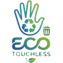

Presentar
El usuario acerca un residuo común al sistema.
Un prototipo escolar que conecta visión artificial, automatización y cartón reutilizado para orientar la correcta disposición de residuos comunes.
ECO-TOUCHLESS investiga si un sistema accesible puede mejorar la separación en origen y reducir el contacto manual con el recipiente. Parte de un problema real: en espacios de alta circulación, los residuos se mezclan y las tapas se manipulan constantemente.
Estos datos corresponden al prototipo escolar y a las condiciones experimentales descritas en el informe. La evaluación continúa con mediciones comparativas y encuestas de aceptación.
Cinco pasos, de punta a punta, sin que la mano toque la tapa.
El usuario acerca un residuo común al sistema.
La cámara registra la imagen del objeto.
El modelo estima su categoría visual.
La predicción válida se comunica al control.
El servomotor mueve la tapa correspondiente.
Clasificación correcta, tiempo de respuesta, aperturas correctas, contactos manuales, costo y aceptación de potenciales usuarios.
El sistema se plantea para residuos comunes. Las categorías consideradas dependen del entrenamiento del modelo: papel/cartón, plástico, metal y orgánicos.
La propuesta combina materiales recuperados con componentes accesibles. El cartón permite prototipar, modificar y enseñar economía circular; no es el material final para instalaciones permanentes.
*Incluye una tablet familiar valuada de forma aproximada en el presupuesto del informe.
Elige una versión de la aplicación Android o consulta el informe completo que fundamenta este proyecto.

RecomendadaVersión actual de la aplicación Android.
Descargar APKVersión beta, publicada bajo el nombre anterior del proyecto.
Descargar APK betaObjetivos, metodología, resultados, limitaciones y proyección del prototipo.
Los APK se instalan en Android. Es posible que el dispositivo solicite permitir la instalación desde esta fuente.
La innovación no es solo automatizar: también es medir, reconocer límites y proponer mejoras con evidencia.
Descarga la última versión para Android o lee el informe con la metodología y los resultados del prototipo.